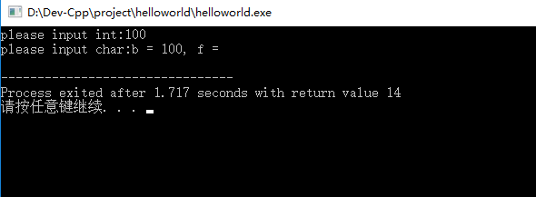
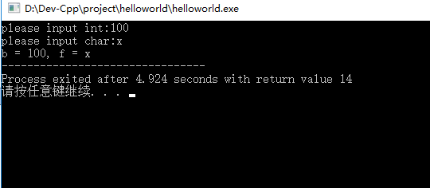
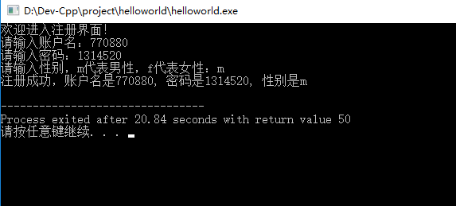
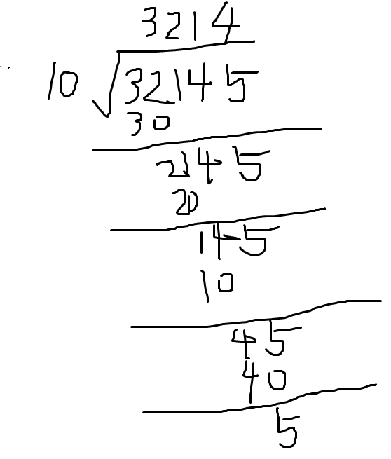

5.1.4 再来一个C库函数getchar吸收回车键
回车键也是一个字符，在使用scanf的时候，输入完毕要按下回车键，这时候回车键也会被输入到stdin流中，会搞乱我们的程序。
注意：stdin是输入流，stdout是输出流，这两个流就是在内存中流进流出的数据，根据流向不同命名也不同。
比如以下代码执行后，
#include <stdio.h>
void main()
{
int b;
char f;
printf("please input int:");
scanf("%d", &b);
printf("please input char:");
scanf("%c", &f);
printf("b = %d, f = %c", b, f);
}执行结果如图5.7，

图5.7 回车键被变量f吸收的结果
原本以为，根据代码的逻辑操作：先输入变量b的值，然后按下回车，再输入变量f的值，然后再回车，最后printf这两个变量的值，皆大欢喜！
没想到实际操作中：输入了100赋值给变量b，再按下回车就输出了如图5.7的结果。
仔细想想，输出结果中，“f = ” 后面感觉换了一行，联想到平时在使用word或者txt打字的时候，回车键也有换行的作用，那么现在就有理由相信，回车键赋值给了变量f。可能笔者之前没有讲明，回车键也是一个字符，就像a、b、c、d一样，是可以赋值的。为了吸收这个回车键，可以使用C库函数getchar，更改后，代码如下，其实就是在scanf后面添加一句getchar来吸收输入流，
#include <stdio.h>
void main()
{
int b;
char f;
printf("please input int:");
scanf("%d", &b);
getchar();
printf("please input char:");
scanf("%c", &f);
printf("b = %d, f = %c", b, f);
}结果如图5.8，

图5.8 添加getchar吸收回车键
读者肯定这时候会有困惑，到底什么是标准输入流stdin，什么是标准输出流stdout，为啥使用了scanf后要用回车键，笔者一时半会也解释不清，先把疑问搁着，说不定后续慢慢就能明白这些概念了，先明白怎么使用吧，在多次使用中了解它们的用意。
5.1.4 第一次自主练习题，做个简单的注册功能
学习写程序，一定要多练习，多上机，机你太美！这是肺腑之言，更是经验之谈。
题目：做个注册功能界面，输入账户，输入密码，输入性别，然后显示出来。
思路：第一次使用微信，第一次使用抖音，第一次使用博客园的时候，都会有个注册功能，注册功能就是填写基本信息。
由于现在掌握的知识有限，做不到输入姓名名字，也做不到输入一长串数字如身份证号码等，所以加了个限制，就让账户名是一串数字吧，并且要在int的可容许范围内，也就是第四章查看表4.1中，整型范围在-2,147,483,648 到 2,147,483,647之内的数字，密码也是如此，至于性别就暂时用‘m’（male）代表男性，‘f’（female）代表女性。很简单吧，开始练习吧。练习完以后，可以查看笔者给出的参考代码，如下：
#include <stdio.h>
void main()
{
int account;
int passwd;
char sex;
printf("欢迎进入注册界面！\n");
printf("请输入账户名：");
scanf("%d", &account);
getchar();
printf("请输入密码：");
scanf("%d", &passwd);
getchar();
printf("请输入性别，m代表男性，f代表女性：");
scanf("%c", &sex);
printf("注册成功，账户名是%d, 密码是%d, 性别是%c \n", account, passwd, sex);
}运行结果图5.9，

图5.9 运行结果
代码解析：
1. 变量名，可以是单词account还有sex等？之前有讲过，变量名可以使用英文单词或者自己创建的字母组合，如果不想用英语的话，可以给变量名取名为zhanghu，但是变量名不可以用C语言关键词，比如int，char等。变量名也可以添加下划线，这个看个人口味了。
2. 可以输出中文？因为有的编译器支持中文输出，很荣幸，Dev-C++是支持的，之前不用是为了鼓励使用英文。现在还是建议尽量使用英文。
3. 在printf中，“\n”是啥？在ASCII中，它代表换行符，是转义字符中的一个，有了它，就能输出一个回车键的效果。C语言中有多个转义字符，后续逐步介绍。
5.2 运算符
5.2.1 加减乘除取余运算
回顾之前的变量，printf，scanf，有了它们，就能够制作简单的计算器了。
在键盘中，找几个按键，其中，“+”可以用在加法上，“-”可以用在减法上，“*”用在乘法上，“/”用在除法上，“%”用在取余数上，“=”表示赋值。
小学学习加减法的时候，一般这么写运算表达式：x1+x2=y；
在C语言中，由于“=”这个赋值表达式是从右往左边赋值，所以要这么写y=x1+x2；体现在代码中，如下：
#include <stdio.h>
void main()
{
int x1, x2;
int y;
x1 = 100;
x2 = 50;
y = x1 + x2;
printf("x1 + x2 = %d \n", y);
}执行后输出结果是：x1 + x2 = 150
注意：C语言支持变量名后面加数字。
读者可以自行吧“+”改为“-”或者改为“*”或者改为“/”或者改为“%”，试试看结果，就能够知道“-”为减法运算符，“*”为乘法运算符，“/”为除法运算符，“%”为取余运算符。
注意：取余的意思就是求两个数相除的余数，比如100除以50的余数为0,100除以49的余数为2。
掌握了以上，就可以做个简单的加减乘除计算器了，希望读者自行完成，功能就是输入两个数，然后输出这两个数的运算结果。
5.2.2 混合表达式及运算优先级
小学题，已知表达式y = x1 + x2 * x3，且x1等于10，x2等于5，x3等于7，求y值？
结果是多少，一目了然，按照正常思维，乘法运算的优先级高于加法运算，所以应该先计算x2*x3得35，然后再计算加法，得到y值等于45。
C语言中也是如此，运算符那么多，应该谁先谁后，都是规定的死死的，如表5.1，
| 优先级 | 运算符 | 结合律 | |
|---|---|---|---|
| 1 | 后缀运算符：[] () · -> ++ --(类型名称){列表} | 从左到右 | |
| 2 | 一元运算符：++ -- ! ~ + - * & sizeof_Alignof | 从右到左 | |
| 3 | 类型转换运算符：(类型名称) | 从右到左 | |
| 4 | 乘除法运算符：* / % | 从左到右 | |
| 5 | 加减法运算符：+ - | 从左到右 | |
| 6 | 移位运算符：<< >> | 从左到右 | |
| 7 | 关系运算符：<<= >>= | 从左到右 | |
| 8 | 相等运算符：== != | 从左到右 | |
| 9 | 位运算符 AND：& | 从左到右 | |
| 10 | 位运算符 XOR：^ | 从左到右 | |
| 11 | 位运算符 OR：| | 从左到右 | |
| 12 | 逻辑运算符 AND：&& | 从左到右 | |
| 13 | 逻辑运算符 OR：|| | 从左到右 | |
| 14 | 条件运算符：?: | 从右到左 | |
| 15 | 赋值运算符： = += -= *= /= %= &= ^= |= <<= >>= |
从右到左 | |
| 16 | 逗号运算符：， | 从左到右 |
|
表5.1 运算符优先级规定表
哇塞，运算符那么多，还有的没用过呢？记不住啊，我太难了，好累啊！
没办法，这些都得记住，但不是现在马上全部记住，用着用着就能够记住的，相信我，先把这份表收藏，用的时候拿出来看，要死记硬背也行，看个人习惯怎么记忆了。
请记住，C语言运算符遵循一个原则，优先级最高先运算，同级别的从左往右运算。
比如，一个表达式 (x1+x2*x3)/(x4-x5+x6-x7)中，
括号等级最高，所以先运算括号运算符，有两个括号运算符，所以这是同级别运算，先运算左边的括号，在左边的括号中(x1+x2*x3)，有加法有乘法，先执行高等级的乘法，然后再执行加法。然后执行右边的括号运算里面的表达式(x4-x5+x6-x7)，有加法有减法，是同级别的运算，所以先运算左边的减法再依次运算加法和减法，最终把两边运算的值进行除法计算即可。
5.2.3 表达式练习题之求平均数
要求：输入三个整数，求它们的平均值。简单吧，代码如下：
#include <stdio.h>
void main()
{
int x1, x2, x3;
int y;
printf("please input three data: \n");
scanf("%d, %d, %d", &x1, &x2, &x3);
getchar();
y = (x1 + x2 + x3)/3;
printf("average y = %d\n", y);
}编译执行后，输入2,4,6得到结果：average y = 4。
但是如果输入3,5,6得到的结果居然也是：average y = 4。打开计算器，计算出平均值为3.666666......
这是由于计算机计算精度不同导致的，由于整型int只能精确到小数点左边，也就是int取值范围在-2,147,483,648 到 2,147,483,647，所以为了精度高一些，可以用上float类型，它的取值范围是1.2E-38 到 3.4E+38。
改进后，代码如下：
#include <stdio.h>
void main()
{
float x1, x2, x3;
float y;
printf("please input three data: \n");
scanf("%f, %f, %f", &x1, &x2, &x3);
getchar();
y = (x1 + x2 + x3)/3;
printf("average y = %f\n", y);
}这时候，再输入3,5,6得到的结果就是：average y = 4.666667。
修改的部分有，1. 声明的类型由int改为float。
2. scanf中，%d改为%f。
3. printf中，%d改为%f。
有了这些修改就能够支持精度高的浮点型float数据运算了。
5.2.4 表达式练习题之求个位数和万位数的和
出这个题纯粹练习思维，题：输入一个5位数的整型，求个位数和万位数的和。
希望读者自行编写完程序后，再看参考代码。
大体思路：通过scanf输入一个5位数，比如输入的是32145，取个位5，取万位数3，求和。
具体思路：
1. 定义一个变量用来存放上面所说的32145，定义一个变量用来存放个位数，定义一个变量用来存放万位数，定义一个变量用来存放个位和万位的和，总共需要定义四个变量。
2. 求个位数，需要用到取余表达式，即32145%10。打开草稿纸，如图5.10所示，计算32145除以10的余数为5，刚好就是获得的个位数，

图5.10 计算32145%10的结果
3. 求万位数，只需要用到除法表达式，即32145/10000，要打开草稿纸算也行，笔者就不发图了。
4. 计算个位数和万位数的和。代码如下：
#include <stdio.h>
void main()
{
int data;
int first, fifth;
int getAddWorth;
printf("please input a 5 digit data\n");
scanf("%d", &data);
getchar();
first = data % 10;
fifth = data / 10000;
getAddWorth = first + fifth;
printf("data = %d, first = %d, fifth = %d, getAddWorth = %d \n", data, first, fifth, getAddWorth);
}执行后，输入32145可得getAddWorth的值为8，正解！
注意：变量命名也可以由大写字母和小写字母的组合，如getAddWorth。
关键的拓展，为了自身打铁能力过硬，可以给自己出些更苛刻的题，刚才的题给出了思路，以下的题建议自行完成，如果实在完成不了，读者可以在评论区索要正确答案。
题1：一个六位数中，取千位数和十位数的和。
题2：一个六位数中，个位数和万位数调换位置，输出结果。
最近为了配合腾讯云的审查，现在发个链接，希望读者多多担待：
我的博客即将同步至腾讯云+社区，邀请大家一同入驻：https://cloud.tencent.com/developer/support-plan?invite_code=2jbuw6ddddkwg